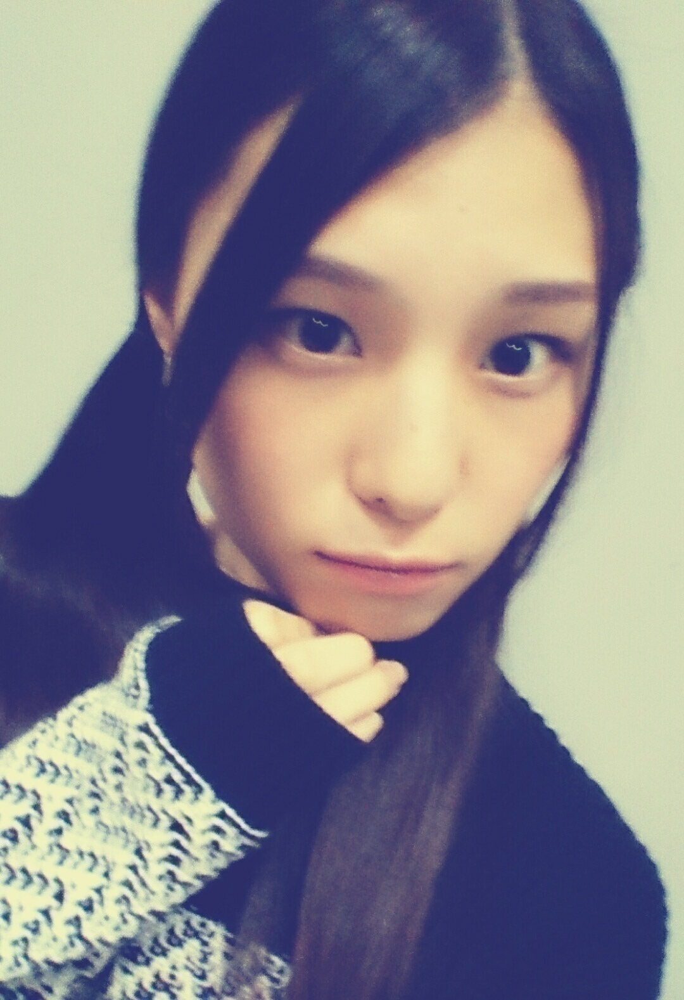
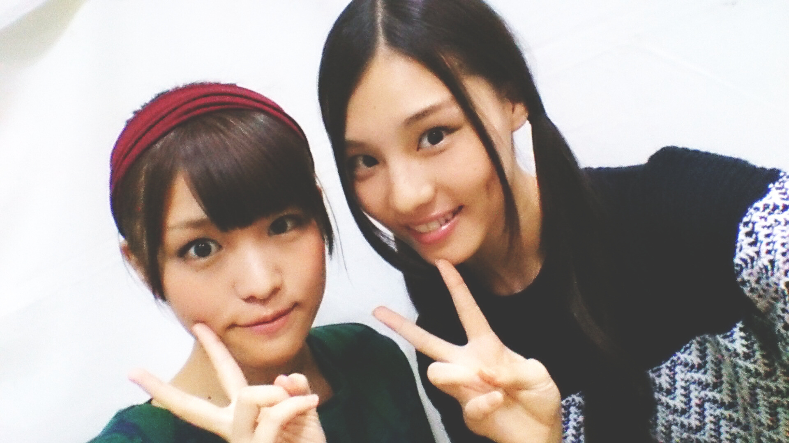
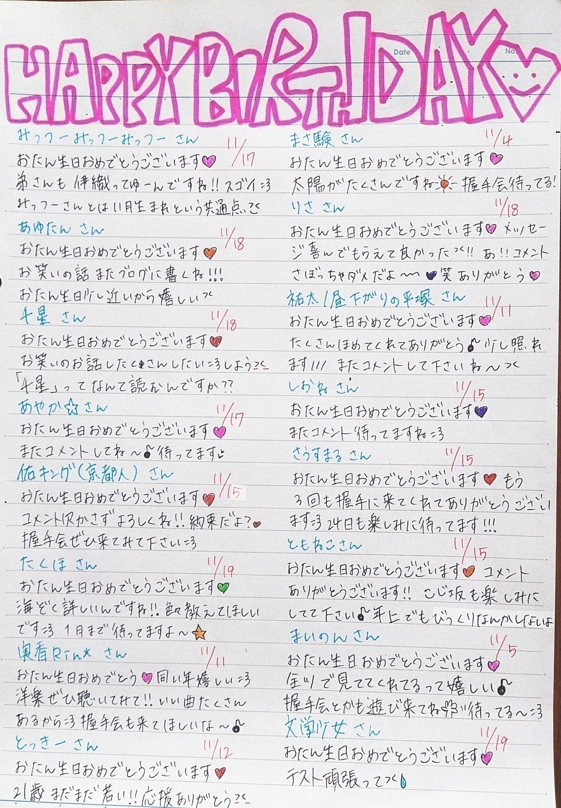
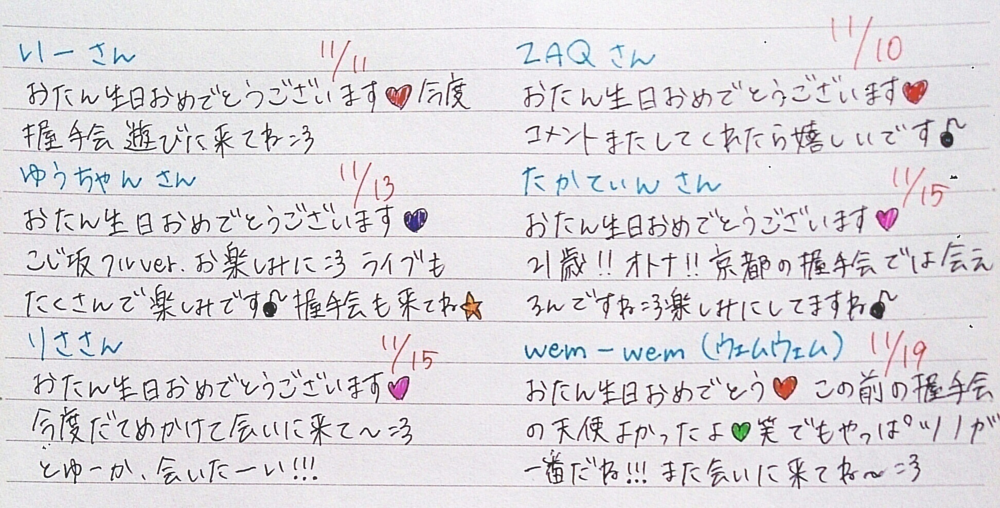
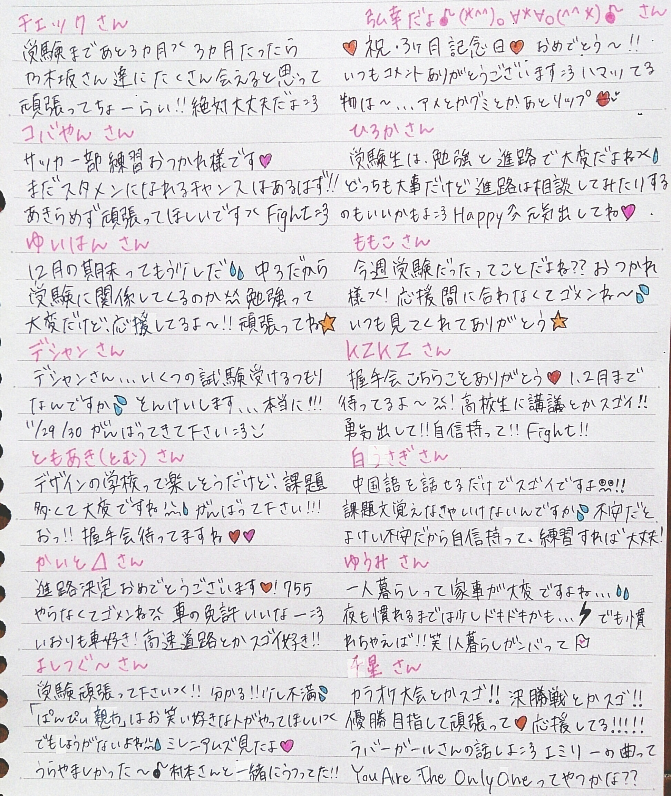
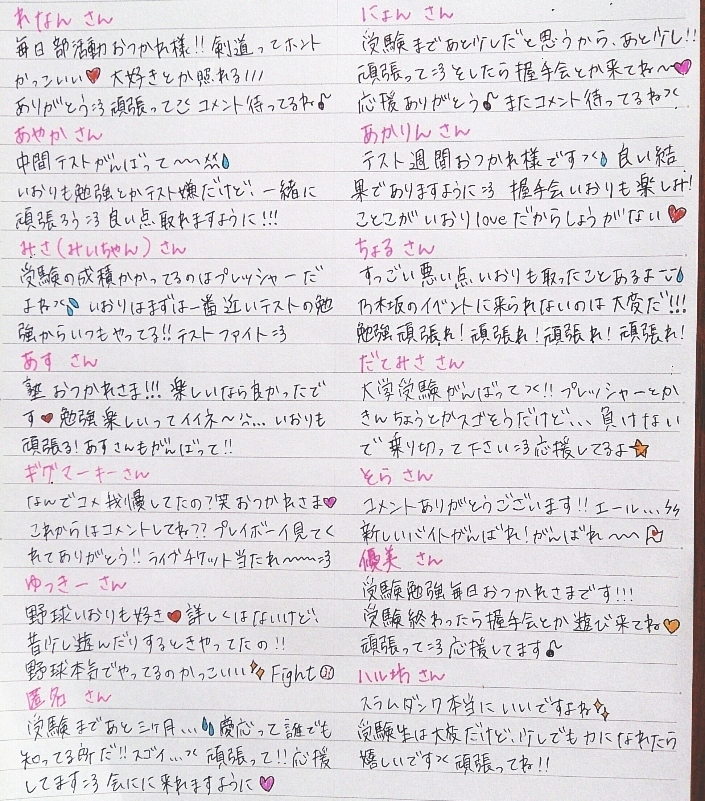
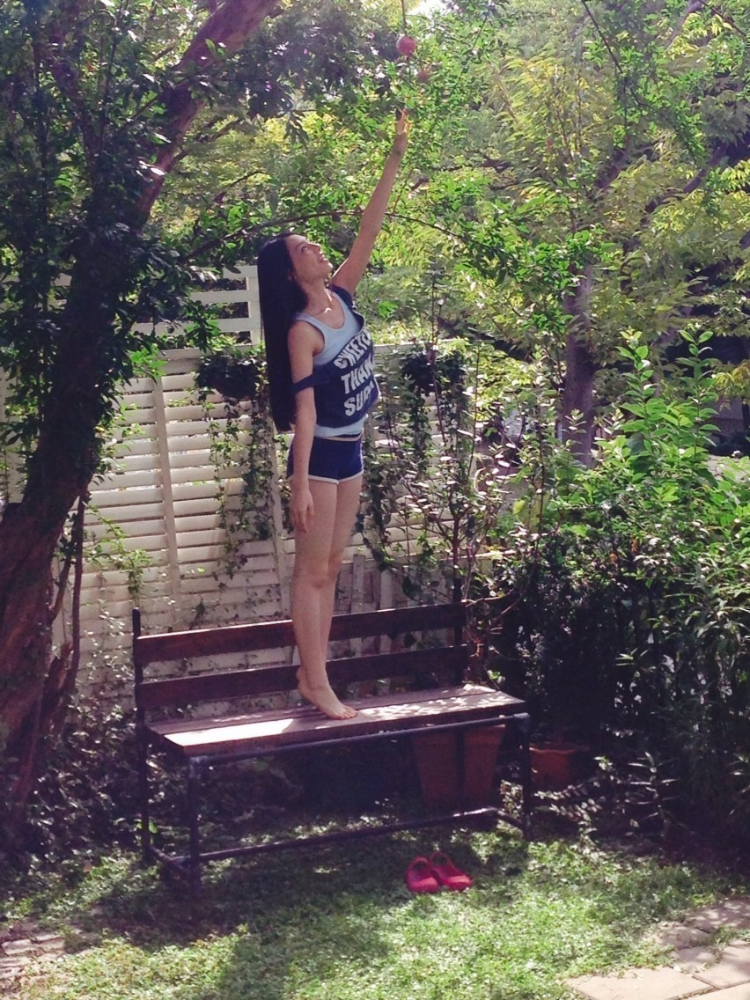
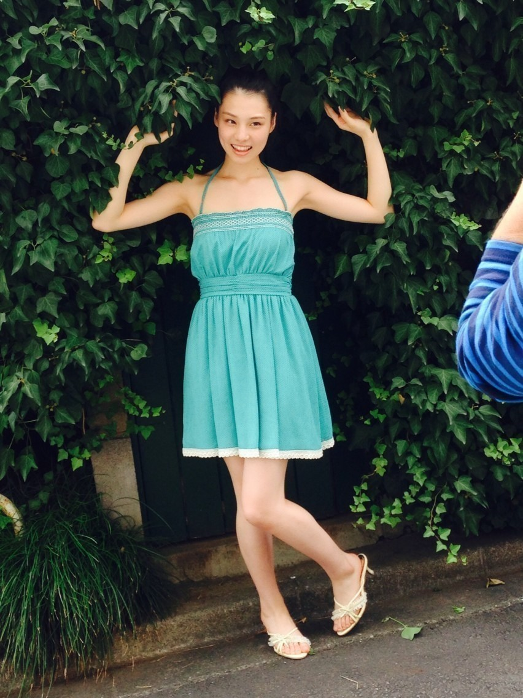

| 2014/11 15 Sat | (*いおり_(．．*)vol.13) |
みなさんこんばんはー！
高校2年生16歳
さがらいおりです！

ちょっとブレてる
最近メッセージを書いた方から
試験受かったよー！とか
試合勝てた！！とか
勉強やる気出ました。とか
報告してくれる方がいて
書いて良かったなって思いました♡♡
いおりも皆さんから元気もらってるからね(´,,•ω•,,)♡
お返ししないとっ♪♪

あ！安室奈美恵さんの新曲今日ゲットして来た！！！
遅くなってしまった( / _ ; )
あーやっぱ可愛いなー♡♡
安室奈美恵さんが出た雑誌は
全部買っちゃうくらい
大大大好きなんですよ♡♡
海外からも1冊取り寄せちゃったし、、、(ºωº)♡
この前ミレニアムズに生駒さん出てたの見て
ひじがみ様やってる！！！
うわーすごーい いいなー
って思ってみてました
あとしくじり先生に高山さんが出てたの見て
うわーいいなーいーいーなー
って思ってみてました
~いおり庵~
 髪の毛なんかケアしてる？
シヤンプーとリンスは何使ってるの？
髪の毛なんかケアしてる？
シヤンプーとリンスは何使ってるの？
特に何もしてないよー！
シャンプーとリンスは企業秘密です。。。
あ、でも前こったんに
言っちゃった、、
けど覚えてないっしょ♪♪
いおりはインドア派orアウトドア派？
インドア派かな、
学校終わってから次の予定が 3 時間空いてたら一旦お家に帰りたいし、洋服もわざわざ都会まで買いに行ったりしないし、洋服以外の買い物は基本学校の帰りとかについでに行ったりネットで頼んだりしちゃうし、今はお笑いライブと富士急ハイランドとハウステンボスのイルミネーションをに見に行く以外行きたい所はないかな：）
基本的に家事は自分でやる？
基本的に家事はママがやる！
洋服買うときは何を決め手に買うの？
基本ママと買いに行くから
ママがこれ似合うよ！って言ったのを
着てみて良かったら買う♪♪
握手会で着る洋服は
選ぶの難しいからね、、
お誕生日の方にメッセージ(´,,•ω•,,)♡


次のブログ更新に近い方は
次書きますね♪
応援メッセージも書きました↓


週プレのオフショット


モバメにも何枚か送ったんだけど、
楽しく撮影できました♪♪
個人的に好きなカットは
一番最初のページの写真かなー
まだ売ってるかな？
まだ見てない方はぜひ見てみて下さい：）
かなさんに褒めてもらえた～///
えへへ～
あ、純奈も可愛かったって言ってくれた♡
えへ～
今度ひなとお泊りするの♡
いつも予定たてても
ギリギリになってダメになっちゃうから
ひなこ、、いおり、、
お泊りしたいよーーー！！！！！
大阪スペシャルライブ＆似顔絵会
当たった方楽しみましょうね♪♪
似顔絵会当たった方
期待せずに
楽しみに
遊びに来てください♡♡
待ってまーす *˙︶˙*)ﾉ"
i o r i .

コメント(556)
2014/11/15 21:12